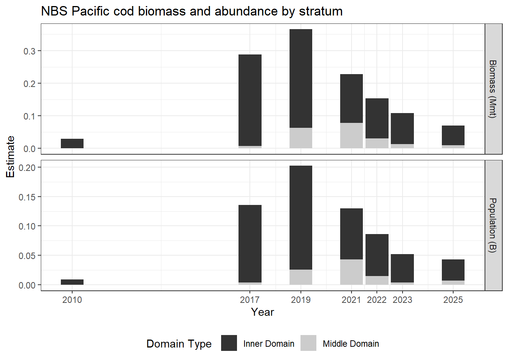

library(RODBC)
channel <- gapindex::get_connected()Access data
Access data via Oracle (AFSC only)
AFSC Oracle users can access the database via SQL developer to view and pull the production data directly from the GAP_PRODUCTS Oracle schema. The user can also use SQL developer to view and pull the GAP Products data directly from the GAP_PRODUCTS Oracle schema.
7.0.1 Connect to Oracle from R
Many users will want to access the data from Oracle using R. The user will need to install the RODBC R package and ask OFIS (IT) connect R to Oracle. Then, use the following code in R to establish a connection from R to Oracle:
Here, the user can establish the oracle connection by entering their username and password in the channel <- gapindex::oracle_connect() function. Never save usernames or passwords in scripts that may be intentionally or unintentionally shared with others. If no username and password is entered in the function, pop-ups will appear on the screen asking for the username and password.
After you connect to VPN, you’ll be able to log into Oracle.
Data SQL Query Examples:
library(gapindex)
library(RODBC)
library(flextable)
library(ggplot2)
library(magrittr)
library(dplyr)7.0.2 Ex. Select all data from tables
You can download all of the tables locally using a variation of the code below. Once connected, pull and save the tables of interest into the R environment.
locations <- c(
"GAP_PRODUCTS.AKFIN_AGECOMP",
"GAP_PRODUCTS.AKFIN_AREA",
"GAP_PRODUCTS.AKFIN_BIOMASS",
"GAP_PRODUCTS.AKFIN_CATCH",
"GAP_PRODUCTS.AKFIN_CPUE",
"GAP_PRODUCTS.AKFIN_CRUISE",
"GAP_PRODUCTS.AKFIN_HAUL",
"GAP_PRODUCTS.AKFIN_LENGTH",
"GAP_PRODUCTS.AKFIN_METADATA_COLUMN",
"GAP_PRODUCTS.AKFIN_SIZECOMP",
"GAP_PRODUCTS.AKFIN_SPECIMEN",
"GAP_PRODUCTS.AKFIN_STRATUM_GROUPS",
"GAP_PRODUCTS.AKFIN_SURVEY_DESIGN",
"GAP_PRODUCTS.AKFIN_TAXONOMIC_CLASSIFICATION"
)
for (i in 1:length(locations)) {
print(locations[i])
a <- RODBC::sqlQuery(channel, paste0("SELECT * FROM ", locations[i]))
write.csv(x = a, file = here::here("data", paste0(locations[i], ".csv")))
}7.0.3 Ex. CPUE for all EBS and NBS stations with associated haul, cruise, and species information.
a <- RODBC::sqlQuery(channel = channel, # NOT RACEBASE.HAUL
query = paste0(
"
-- Select columns for output data
SELECT
cr.CRUISEJOIN,
cr.CRUISE,
cr.YEAR,
cr.SURVEY_DEFINITION_ID,
cr.SURVEY_NAME,
cr.VESSEL_ID,
cr.VESSEL_NAME,
cp.HAULJOIN,
cp.SPECIES_CODE,
tt.SPECIES_NAME,
tt.COMMON_NAME,
cp.WEIGHT_KG,
cp.COUNT,
cp.AREA_SWEPT_KM2,
cp.CPUE_KGKM2,
cp.CPUE_NOKM2,
hh.HAUL,
hh.STATION
-- Identify what tables to pull data from
FROM GAP_PRODUCTS.AKFIN_HAUL hh
LEFT JOIN GAP_PRODUCTS.AKFIN_CRUISE cr
ON hh.CRUISEJOIN = cr.CRUISEJOIN
LEFT JOIN GAP_PRODUCTS.AKFIN_CPUE cp
ON hh.HAULJOIN = cp.HAULJOIN
LEFT JOIN GAP_PRODUCTS.TAXONOMIC_CLASSIFICATION tt
ON cp.SPECIES_CODE = tt.SPECIES_CODE
-- Filter for EBS and NBS observations
WHERE SURVEY_DEFINITION_ID IN (143, 98) -- 143 NBS, 98 EBS
AND tt.SURVEY_SPECIES = 1
-- Only return the first 3 rows because otherwise this would be a huge table!
FETCH FIRST 3 ROWS ONLY;"))
flextable::flextable(head(a)) %>%
flextable::fit_to_width(max_width = 6) %>%
flextable::theme_zebra()CRUISEJOIN | CRUISE | YEAR | SURVEY_DEFINITION_ID | SURVEY_NAME | VESSEL_ID | VESSEL_NAME | HAULJOIN | SPECIES_CODE | SPECIES_NAME | COMMON_NAME | WEIGHT_KG | COUNT | AREA_SWEPT_KM2 | CPUE_KGKM2 | CPUE_NOKM2 | HAUL | STATION |
|---|---|---|---|---|---|---|---|---|---|---|---|---|---|---|---|---|---|
80 | 198,203 | 1,982 | 98 | Eastern Bering Sea Crab/Groundfish Bottom Trawl Survey | 1 | CHAPMAN | 877 | 1 | fish egg unid. | 0 | 0 | 0.042021 | 0 | 0 | 21 | G-10 | |
80 | 198,203 | 1,982 | 98 | Eastern Bering Sea Crab/Groundfish Bottom Trawl Survey | 1 | CHAPMAN | 877 | 2 | fish larvae unid. | 0 | 0 | 0.042021 | 0 | 0 | 21 | G-10 | |
80 | 198,203 | 1,982 | 98 | Eastern Bering Sea Crab/Groundfish Bottom Trawl Survey | 1 | CHAPMAN | 877 | 3 | fish unid. | 0 | 0 | 0.042021 | 0 | 0 | 21 | G-10 |
7.0.4 Ex. CPUE for all stations contained in the INPFC Shumagin region (AREA_ID = 919) for Pacific cod.
dat <- RODBC::sqlQuery(channel = channel,
query =
"
-- Select columns for output data
SELECT
HAULJOIN,
SPECIES_CODE,
STRATUM,
LATITUDE_DD_START,
LONGITUDE_DD_START,
CPUE_KGKM2,
GEAR_TEMPERATURE_C
-- Identify what tables to pull data from
FROM GAP_PRODUCTS.AKFIN_CPUE cpue
LEFT JOIN GAP_PRODUCTS.AKFIN_HAUL haul
USING (HAULJOIN)
-- Filter for P. Cod observations
WHERE SPECIES_CODE IN (21720)
-- Select all stratum within the area_id 919 (INPFC Shumagin region)
AND haul.STRATUM IN
(
SELECT
STRATUM
FROM GAP_PRODUCTS.AKFIN_STRATUM_GROUPS
WHERE AREA_ID = 919
);")dat <- dat %>%
dplyr::select(HAULJOIN, STRATUM, SPECIES_CODE, LATITUDE_DD_START, LONGITUDE_DD_START, CPUE_KGKM2, GEAR_TEMPERATURE_C) %>%
dplyr::mutate(SPECIES_CODE = as.character(SPECIES_CODE),
STRATUM = as.character(STRATUM)) %>%
dplyr::arrange(SPECIES_CODE)
flextable::flextable(head(dat)) %>%
flextable::fit_to_width(max_width = 6) %>%
flextable::theme_zebra()HAULJOIN | STRATUM | SPECIES_CODE | LATITUDE_DD_START | LONGITUDE_DD_START | CPUE_KGKM2 | GEAR_TEMPERATURE_C |
|---|---|---|---|---|---|---|
-22,147 | 11 | 21720 | 53.92966 | -164.6276 | 105.7733 | 4.3 |
-22,119 | 111 | 21720 | 53.79215 | -165.3128 | 451.5863 | 4.5 |
-22,107 | 12 | 21720 | 55.49881 | -161.5752 | 1,163.0550 | 5.2 |
-22,099 | 12 | 21720 | 54.85306 | -162.9025 | 1,301.4142 | 4.5 |
-22,153 | 11 | 21720 | 54.08538 | -163.3250 | 724.5604 | 4.6 |
-22,135 | 11 | 21720 | 54.42703 | -162.4245 | 210.1829 | 4.9 |
7.0.5 Ex. EBS Pacific Ocean perch CPUE and akgfmaps map
Pacific Ocean perch catch-per-unit-effort estimates for EBS in 2021 from GAP_PRODUCTS.AKFIN_CPUE and map constructed using akgfmaps. Here, we’ll use AKFIN HAUL and CRUISES data also included in this repo, for convenience, though they are very similar to their RACEBASE analogs.
dat <- RODBC::sqlQuery(channel = channel,
query =
"
-- Select columns for output data
SELECT
(cp.CPUE_KGKM2/100) CPUE_KGHA, -- akgfmaps is expecting hectares
hh.LATITUDE_DD_START LATITUDE,
hh.LONGITUDE_DD_START LONGITUDE
-- Use HAUL data to obtain LATITUDE & LONGITUDE and connect to cruisejoin
FROM GAP_PRODUCTS.AKFIN_CPUE cp
LEFT JOIN GAP_PRODUCTS.AKFIN_HAUL hh
ON cp.HAULJOIN = hh.HAULJOIN
-- Use CRUISES data to obtain YEAR and SURVEY_DEFINITION_ID
LEFT JOIN GAP_PRODUCTS.AKFIN_CRUISE cc
ON hh.CRUISEJOIN = cc.CRUISEJOIN
-- Filter data
WHERE cp.SPECIES_CODE = 30060
AND cc.SURVEY_DEFINITION_ID = 98
AND cc.YEAR = 2021;")flextable::flextable(head(dat)) %>%
flextable::fit_to_width(max_width = 6) %>%
flextable::theme_zebra()CPUE_KGHA | LATITUDE | LONGITUDE |
|---|---|---|
0 | 58.00612 | -172.8205 |
0 | 58.36181 | -172.3055 |
0 | 60.68245 | -174.1275 |
0 | 61.30959 | -173.5769 |
0 | 58.97291 | -171.1306 |
0 | 57.32779 | -171.4952 |
# devtools::install_github("afsc-gap-products/akgfmaps", build_vignettes = TRUE)
library(akgfmaps)
figure <- akgfmaps::make_idw_map(
x = dat, # Pass data as a data frame
region = "bs.south", # Predefined EBS area
set.breaks = "jenks", # Gets Jenks breaks from classint::classIntervals()
in.crs = "+proj=longlat", # Set input coordinate reference system
out.crs = "EPSG:3338", # Set output coordinate reference system
grid.cell = c(20000, 20000), # 20x20km grid
key.title = "Pacific Ocean perch") # Include in the legend title[inverse distance weighted interpolation]
[inverse distance weighted interpolation]figure$plot +
ggplot2::guides(fill=guide_legend(title = "Pacific Ocean perch\nCPUE (kg/km2)")) |>
change_fill_color(new.scheme = "grey", show.plot = FALSE)
akgfmaps map.7.0.6 Ex. GOA Pacific Ocean perch biomass and abundance
Biomass and abundance for Pacific Ocean perch from 1990 – 2023 for the western/central/eastern GOA management areas as well as for the entire region.
dat <- RODBC::sqlQuery(channel = channel,
query =
"
-- Manipulate data to join to
WITH FILTERED_STRATA AS (
SELECT AREA_ID, DESCRIPTION FROM GAP_PRODUCTS.AKFIN_AREA
WHERE AREA_TYPE in ('REGULATORY_AREA', 'REGION')
AND SURVEY_DEFINITION_ID = 47)
-- Select columns for output data
SELECT
BIOMASS_MT,
POPULATION_COUNT,
YEAR,
DESCRIPTION
-- Identify what tables to pull data from
FROM GAP_PRODUCTS.AKFIN_BIOMASS BIOMASS
JOIN FILTERED_STRATA STRATA
ON STRATA.AREA_ID = BIOMASS.AREA_ID
-- Filter data results
WHERE BIOMASS.SPECIES_CODE = 30060")dat0 <- dat %>%
janitor::clean_names() %>%
dplyr::select(biomass_mt, population_count, year, area = description) %>%
pivot_longer(cols = c("biomass_mt", "population_count"),
names_to = "var",
values_to = "val") %>%
dplyr::mutate(
val = ifelse(var == "biomass_mt", val/1e6, val/1e9),
var = ifelse(var == "biomass_mt", "Biomass (Mmt)", "Population (B)"),
area = gsub(x = area, pattern = " - ", replacement = "\n"),
area = gsub(x = area, pattern = ": ", replacement = "\n"),
type = sapply(X = strsplit(x = area, split = "\n", fixed = TRUE), `[[`, 2)) %>%
dplyr::arrange(type) %>%
dplyr::mutate(
area = factor(area, levels = unique(area), labels = unique(area), ordered = TRUE))
flextable::flextable(head(dat)) %>%
flextable::fit_to_width(max_width = 6) %>%
flextable::theme_zebra() %>%
flextable::colformat_num(x = ., j = "YEAR", big.mark = "")BIOMASS_MT | POPULATION_COUNT | YEAR | DESCRIPTION |
|---|---|---|---|
157,295.1 | 317,129,408 | 1990 | GOA Region: All Strata |
157,295.1 | 317,129,408 | 1990 | GOA Region: All Strata |
483,622.6 | 833,902,161 | 1993 | GOA Region: All Strata |
483,622.6 | 833,902,161 | 1993 | GOA Region: All Strata |
771,412.8 | 1,252,616,603 | 1996 | GOA Region: All Strata |
771,412.8 | 1,252,616,603 | 1996 | GOA Region: All Strata |
# install.packages("scales")
library(scales)
figure <- ggplot2::ggplot(
dat = dat0,
mapping = aes(x = year, y = val, color = type)) +
ggplot2::geom_point(size = 3) +
ggplot2::facet_grid(cols = vars(area), rows = vars(var), scales = "free_y") +
ggplot2::scale_x_continuous(name = "Year", n.breaks = 3) +
ggplot2::scale_y_continuous(name = "Estimate", labels = comma) +
ggplot2::labs(title = 'GOA Pacific Ocean perch biomass and abundance 1990 – 2023') +
ggplot2::guides(color=guide_legend(title = "Region Type"))+
ggplot2::scale_color_grey() +
ggplot2::theme_bw() +
ggplot2::theme(legend.direction = "horizontal",
legend.position = "bottom")
figure
7.0.7 Ex. AI rock sole size compositions and ridge plot
Northern and Southern rock sole size composition data from 1991 – 2022 for the Aleutian Islands, with Ridge plot from ggridges.
dat <- RODBC::sqlQuery(channel = channel,
query =
"
-- Manipulate data to join to
WITH FILTERED_STRATA AS (
SELECT
AREA_ID,
DESCRIPTION
-- Identify what tables to pull data from
FROM GAP_PRODUCTS.AKFIN_AREA
WHERE AREA_TYPE = 'REGION'
AND SURVEY_DEFINITION_ID = 52)
-- Select columns for output data
SELECT
LENGTH_MM,
YEAR
FROM GAP_PRODUCTS.AKFIN_SIZECOMP SIZECOMP
JOIN FILTERED_STRATA STRATA
ON STRATA.AREA_ID = SIZECOMP.AREA_ID
-- Filter data results
WHERE SIZECOMP.SURVEY_DEFINITION_ID IN 52
AND SIZECOMP.SPECIES_CODE IN (10261, 10262)")dat0 <- dat %>%
janitor::clean_names() %>%
dplyr::mutate(length_cm = length_mm/10) %>%
head() %>%
flextable::flextable() %>%
flextable::fit_to_width(max_width = 6) %>%
flextable::theme_zebra() %>%
flextable::colformat_num(x = ., j = "year", big.mark = "")
dat0length_mm | year | length_cm |
|---|---|---|
170 | 2018 | 17 |
180 | 2018 | 18 |
190 | 2018 | 19 |
200 | 2018 | 20 |
210 | 2018 | 21 |
220 | 2018 | 22 |
# install.packages("ggridges")
library(ggridges)
figure <-
ggplot2::ggplot(
data = dat,
mapping = aes(x = LENGTH_MM, y = as.factor(YEAR), fill = stat(x))) +
ggridges::theme_ridges(center_axis_labels = TRUE) +
ggridges::geom_density_ridges_gradient(scale = 4, show.legend = FALSE) +
ggplot2::scale_y_discrete(name = "Year", expand = c(0.01, 0)) +
ggplot2::scale_x_continuous(name = "Length (cm)", expand = c(0.01, 0)) +
# ggplot2::scale_fill_grey() +
ggplot2::labs(title = 'AI Rock sole Size Compositions 1991 – 2022')
figure
7.0.8 Ex. EBS Walleye Pollock Age Compositions and Age Pyramid
Walleye pollock age composition for the EBS Standard Area from 1982 – 2022 and the EBS + NW Area from 1987 – 2022, with age pyramid plot.
dat <- RODBC::sqlQuery(channel = channel,
query =
"
-- Manipulate data to join to
WITH FILTERED_STRATA AS (
SELECT
AREA_ID,
DESCRIPTION
FROM GAP_PRODUCTS.AKFIN_AREA
WHERE AREA_TYPE = 'REGION' AND
SURVEY_DEFINITION_ID = 98)
-- Select columns for output data
SELECT
AGECOMP.AGE,
AGECOMP.POPULATION_COUNT,
AGECOMP.SEX
-- Identify what tables to pull data from
FROM GAP_PRODUCTS.AKFIN_AGECOMP AGECOMP
JOIN FILTERED_STRATA STRATA
ON STRATA.AREA_ID = AGECOMP.AREA_ID
-- Filter data results
WHERE SPECIES_CODE = 21740
AND AGE >= 0")dat0 <- dat %>%
janitor::clean_names() %>%
dplyr::filter(sex %in% c(1,2)) %>%
dplyr::mutate(
sex = ifelse(sex == 1, "M", "F"),
population_count = # change male population to negative
ifelse(sex=="M", population_count*(-1), population_count*1)/1e9)
flextable::flextable(head(dat)) %>%
flextable::fit_to_width(max_width = 6) %>%
flextable::theme_zebra()AGE | POPULATION_COUNT | SEX |
|---|---|---|
1 | 109,712,069 | 2 |
2 | 206,608,351 | 2 |
3 | 464,458,137 | 2 |
4 | 237,658,858 | 2 |
5 | 235,969,541 | 2 |
6 | 166,817,093 | 2 |
figure <- ggplot2::ggplot(
data = dat0,
mapping =
aes(x = age,
y = population_count,
fill = sex)) +
ggplot2::scale_fill_grey() +
ggplot2::geom_bar(stat = "identity") +
ggplot2::coord_flip() +
ggplot2::scale_x_continuous(name = "Age") +
ggplot2::scale_y_continuous(name = "Population (billions)", labels = abs) +
ggplot2::ggtitle(label = "EBS Walleye Pollock Age Compositions 1982 – 2022") +
ggplot2::guides(fill = guide_legend(title = "Sex"))+
ggplot2::theme_bw()
figure
7.0.9 Ex. NBS Pacific cod biomass and abundance
Pacific cod biomass and abundance data for the NBS by stratum.
dat <- RODBC::sqlQuery(channel = channel,
query =
"
-- Manipulate data to join to
WITH FILTERED_STRATA AS (
SELECT
AREA_ID,
AREA_NAME,
DESCRIPTION
FROM GAP_PRODUCTS.AKFIN_AREA
WHERE AREA_TYPE in ('STRATUM') AND
SURVEY_DEFINITION_ID = 143)
-- Select columns for output data
SELECT
BIOMASS.BIOMASS_MT,
BIOMASS.POPULATION_COUNT,
BIOMASS.YEAR,
STRATA.AREA_NAME
-- Identify what tables to pull data from
FROM GAP_PRODUCTS.AKFIN_BIOMASS BIOMASS
JOIN FILTERED_STRATA STRATA
ON STRATA.AREA_ID = BIOMASS.AREA_ID
-- Filter data results
WHERE BIOMASS.SURVEY_DEFINITION_ID IN 143
AND BIOMASS.SPECIES_CODE = 21720")dat0 <- dat %>%
janitor::clean_names() %>%
dplyr::select(biomass_mt, population_count, year, area = area_name) %>%
pivot_longer(cols = c("biomass_mt", "population_count"),
names_to = "var",
values_to = "val") %>%
dplyr::mutate(
val = ifelse(var == "biomass_mt", val/1e6, val/1e9),
var = ifelse(var == "biomass_mt", "Biomass (Mmt)", "Population (B)"),
area = factor(area, levels = unique(area), labels = unique(area), ordered = TRUE))
flextable::flextable(head(dat)) %>%
flextable::fit_to_width(max_width = 6) %>%
flextable::theme_zebra() %>%
flextable::colformat_num(x = ., j = "YEAR", big.mark = "")BIOMASS_MT | POPULATION_COUNT | YEAR | AREA_NAME |
|---|---|---|---|
7,089.874 | 4,191,118 | 2017 | Middle Domain |
7,089.874 | 4,191,118 | 2017 | Middle Domain |
7,089.874 | 4,191,118 | 2017 | Middle Domain |
7,089.874 | 4,191,118 | 2017 | Middle Domain |
7,089.874 | 4,191,118 | 2017 | Middle Domain |
30,487.278 | 15,157,597 | 2022 | Middle Domain |
figure <- ggplot2::ggplot(
dat = dat0,
mapping = aes(y = val, x = year, fill = area)) +
ggplot2::geom_bar(position="stack", stat="identity") +
ggplot2::facet_grid(rows = vars(var), scales = "free_y") +
ggplot2::scale_y_continuous(name = "Estimate", labels = comma) +
ggplot2::scale_x_continuous(name = "Year", breaks = unique(dat0$year)) +
ggplot2::labs(title = 'NBS Pacific cod biomass and abundance by stratum') +
ggplot2::guides(fill=guide_legend(title = "Region Type"))+
ggplot2::scale_fill_grey() +
ggplot2::theme_bw() +
ggplot2::theme(legend.direction = "horizontal",
legend.position = "bottom")
figure
7.0.10 Ex. GOA Pacific Ocean perch biomass and line plot
Pacific Ocean perch biomass totals for GOA between 1984-2021 from GAP_PRODUCTS.AKFIN_BIOMASS
dat <- RODBC::sqlQuery(channel = channel,
query =
"
-- Select columns for output data
SELECT
SURVEY_DEFINITION_ID,
BIOMASS_MT,
BIOMASS_VAR,
YEAR
-- Identify what tables to pull data from
FROM GAP_PRODUCTS.AKFIN_BIOMASS
-- Filter data results
WHERE SPECIES_CODE = 30060
AND SURVEY_DEFINITION_ID = 47
AND AREA_ID = 99903
AND YEAR BETWEEN 1984 AND 2023;") %>%
janitor::clean_names() %>%
dplyr::mutate(biomass_kmt = biomass_mt/1000,
# **approximate** 95% confidence interval
biomass_kci_up = (biomass_mt + (2*sqrt(biomass_var)))/1000,
biomass_kci_dw = (biomass_mt - (2*sqrt(biomass_var)))/1000) flextable::flextable(head(dat)) %>%
flextable::fit_to_width(max_width = 6) %>%
flextable::theme_zebra() %>%
flextable::colformat_num(x = ., j = "year", big.mark = "")survey_definition_id | biomass_mt | biomass_var | year | biomass_kmt | biomass_kci_up | biomass_kci_dw |
|---|---|---|---|---|---|---|
47 | 157,295.1 | 2,221,176,968 | 1990 | 157.2951 | 251.5538 | 63.03638 |
47 | 483,622.6 | 11,803,384,787 | 1993 | 483.6226 | 700.9093 | 266.33581 |
47 | 771,412.8 | 41,434,152,202 | 1996 | 771.4128 | 1,178.5204 | 364.30515 |
47 | 727,063.5 | 150,983,542,178 | 1999 | 727.0635 | 1,504.1955 | -50.06854 |
47 | 673,155.1 | 49,285,342,922 | 2001 | 673.1551 | 1,117.1611 | 229.14901 |
47 | 457,421.6 | 5,186,126,529 | 2003 | 457.4216 | 601.4511 | 313.39204 |
a_mean <- dat %>%
dplyr::group_by(survey_definition_id) %>%
dplyr::summarise(biomass_kmt = mean(biomass_kmt, na.rm = TRUE),
minyr = min(year, na.rm = TRUE),
maxyr = max(year, na.rm = TRUE))
figure <-
ggplot(data = dat,
mapping = aes(x = year,
y = biomass_kmt)) +
ggplot2::geom_point(size = 2.5, color = "grey40") +
ggplot2::scale_x_continuous(
name = "Year",
labels = scales::label_number(
accuracy = 1,
big.mark = "")) +
ggplot2::scale_y_continuous(
name = "Biomass (Kmt)",
labels = comma) +
ggplot2::geom_segment(
data = a_mean,
mapping = aes(x = minyr,
xend = maxyr,
y = biomass_kmt,
yend = biomass_kmt),
linetype = "dashed",
linewidth = 2) +
ggplot2::geom_errorbar(
mapping = aes(ymin = biomass_kci_dw, ymax = biomass_kci_up),
position = position_dodge(.9),
alpha = 0.5, width=.2) +
ggplot2::ggtitle(
label = "GOA Pacific Ocean Perch Biomass 1984-2021",
subtitle = paste0("Mean = ",
formatC(x = a_mean$biomass_kmt,
digits = 2,
big.mark = ",",
format = "f"),
" Kmt")) +
ggplot2::theme_bw()
figure